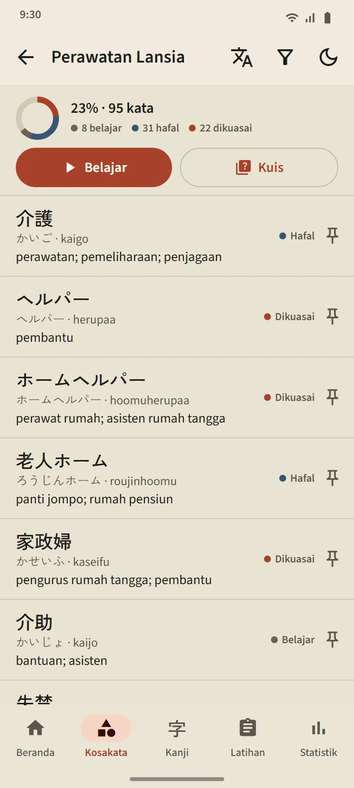

Kosakata
Kosakata yang benar-benar nempel
Setiap kartu dijadwalkan dengan FSRS, algoritma pengulangan berjarak modern. Kamu cukup menilai diri sendiri, dan aplikasi menghitung kapan kata itu muncul lagi: jadwalnya tertulis di setiap tombol. Kata naik dari Baru, Belajar, Hafal, sampai Dikuasai, dan tahap terakhir itu hanya bisa dicapai lewat kuis.
- 95 kategori dalam 11 rumpun. Rumpun Tempat Kerja berisi 21 kategori, dari instruksi atasan, keselamatan kerja, jadwal, dan kontrak sampai pabrik, konstruksi, pertanian, restoran, perhotelan, dan perawatan lansia.
- Satu layar per deck. Persen tuntas, status tiap kata, tombol Belajar dan Kuis.
- Kamus saku 38.085 kata. Cari lewat kanji, kana, romaji, atau arti.
